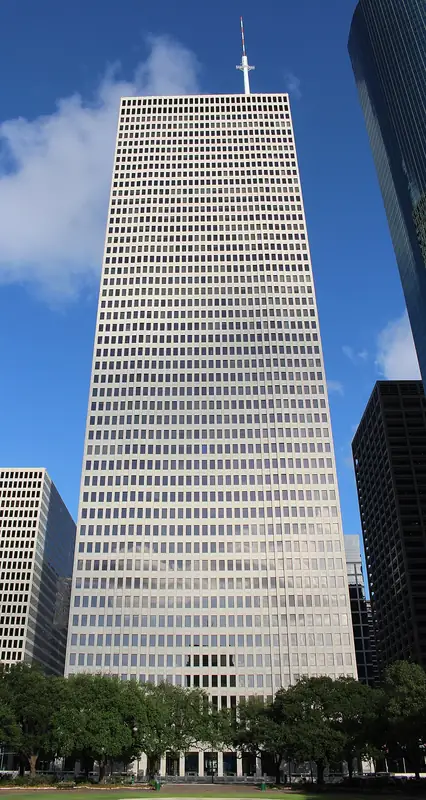
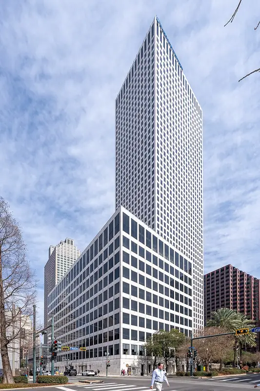
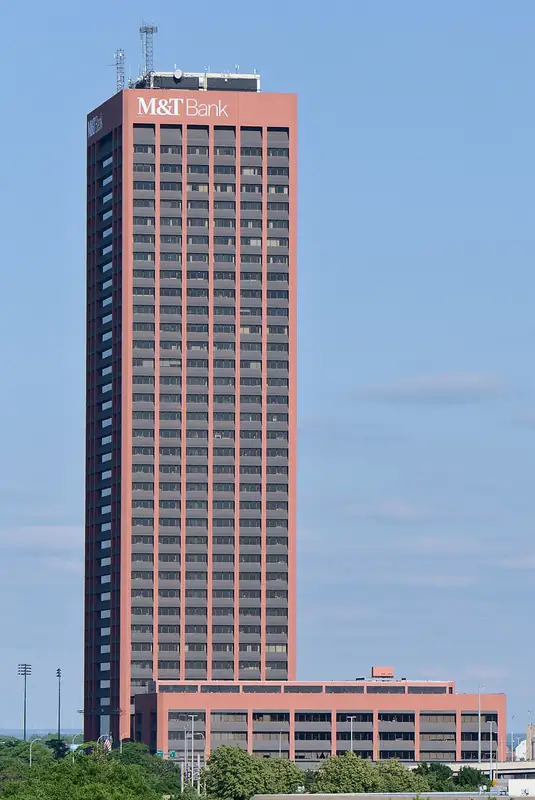
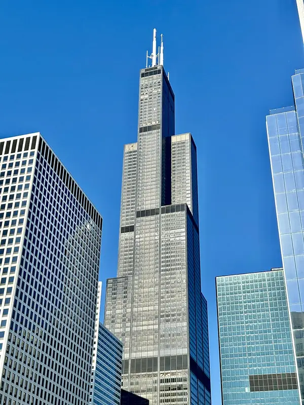
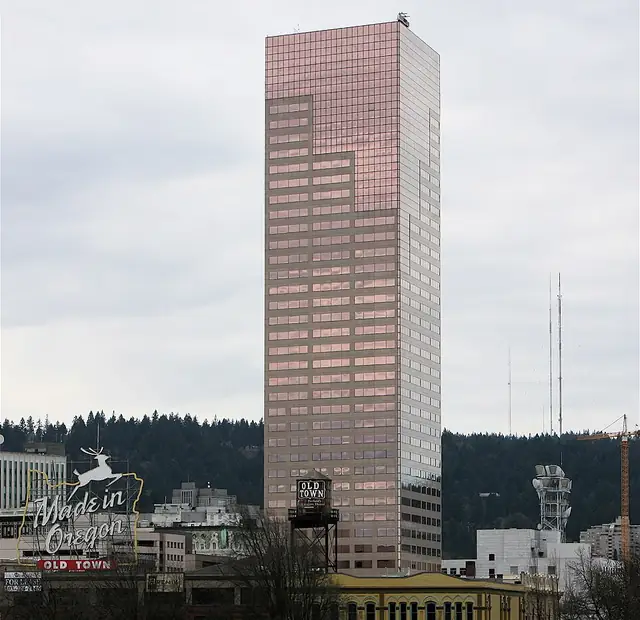
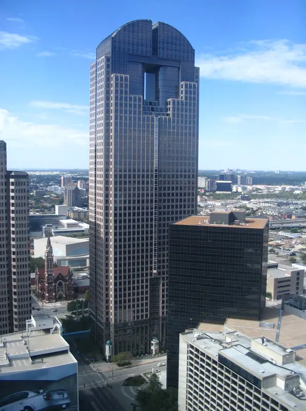
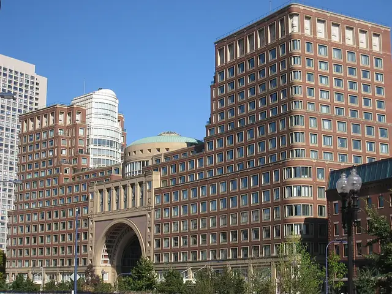
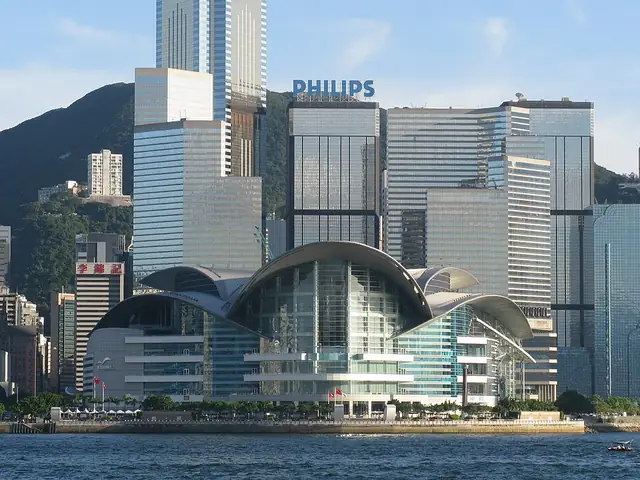
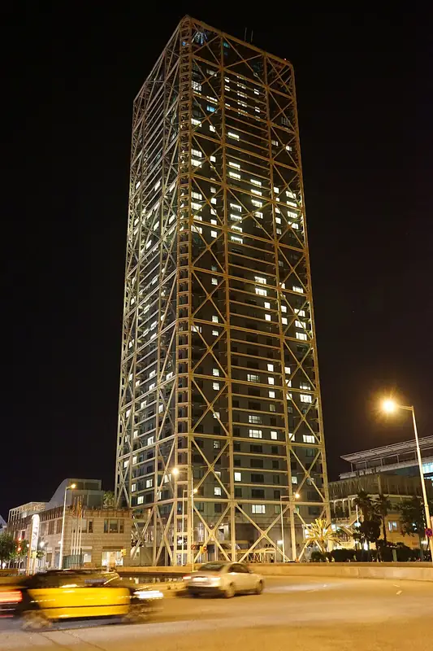
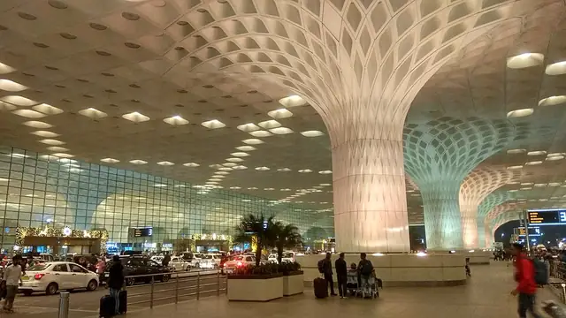

Architect · 13 buildings in Stamped!
Skidmore, Owings & Merrill
Stamped! has 13 buildings by Skidmore, Owings & Merrill, in Houston, New Orleans, Buffalo and 10 more. They date from 1971 (One Shell Plaza) to 2014 (Chhatrapati Shivaji Maharaj T2).
13 buildings in the app

One Shell PlazaHouston · 1971 · International StylePhoto: Coolcaesar, CC BY-SA 4.0, Wikimedia Commons
Hancock Whitney CenterNew Orleans · 1972 · International StylePhoto: ajay_suresh, CC BY 4.0, Wikimedia Commons
Seneca One TowerBuffalo · 1972 · Modernist / BrutalistPhoto: Buffaboy, CC BY-SA 4.0, Wikimedia Commons
Willis TowerChicago · 1974 · International StylePhoto: w_lemay, CC BY-SA 2.0, Wikimedia Commons
US Bancorp Tower (Big Pink)Portland · 1983 · ModernistPhoto: Cacophony, CC BY 3.0, Wikimedia Commons
Chase TowerDallas · 1987 · PostmodernPhoto: User:Nmajdan, CC BY-SA 2.5, Wikimedia Commons
The Rowes WharfBoston · 1987 · PostmodernPhoto: Daderot, Public domain, Wikimedia Commons
HK Convention and Exhibition CentreHong Kong · 1988 · Modernist / ExpressionistPhoto: Baycrest, CC BY-SA 2.5, Wikimedia Commons- Truist Plaza (SunTrust Center)Orlando · 1988 · Post-Modern

Hotel Arts BarcelonaBarcelona · 1992 · High-Tech / Structural ExpressionismPhoto: Sam Sailor, CC BY-SA 4.0, Wikimedia Commons- New Poly PlazaBeijing · 2007 · Modernist / Structural Expressionism
- Cayan TowerDubai · 2013 · High-Tech / Twisted

Chhatrapati Shivaji Maharaj T2Mumbai · 2014 · Structural ExpressionismPhoto: Innocentbunny, CC BY-SA 3.0, Wikimedia Commons
Collect every Skidmore, Owings & Merrill building.
Stamped! keeps track of whose buildings you've seen and shows your favorite architect. Free on iPhone, iPad, Mac and Apple Vision Pro.
Download on theApp StoreEnjoying the guides? Leave a tip to help keep new cities coming.